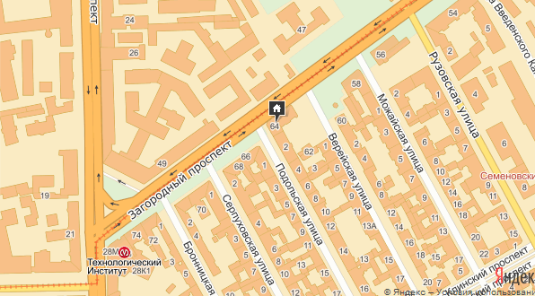

==== Мы рады встретить вас в любое время дня и ночи Расчетный час 12:00 ( въезд с 13:00; выезд до 12:00)
Месторасположение: - 5 мин( 500 метров). пешком от м. Пушкинская - 3 мин(300 метров). пешком от м. Технологический институт
Мы находимся на 6 этаже жилого дома, признанного памятником архитектуры Санкт-Петербурга с прекрасным видом из окон на Загородный и Московский проспекты, на купола Троицкого и Владимирского соборов.
Неподалеку от нас располагаются:Московский вокзал – 10 минут на метро
Витебский вокзал – 5 минут пешком
Балтийский вокзал – 15 минут пешком
Ладожский вокзал – 6 остановок на метро
Автовокзал – 3 остановки на метро
Аэропорт – 30 минут на транспорте.(ходят прямые автобусы до хостела)
10 - местный смешанный - 500 рублей сутки
8 - местный мужской - 600 рублей сутки
8 - местный женский - 600 рублей в сутки
4 - местный смешанный -750 рублей в сутки
2 - местный- 1500 рублей в сутки
Месяц проживания: 10-местный номер: 9000 рублей с человека